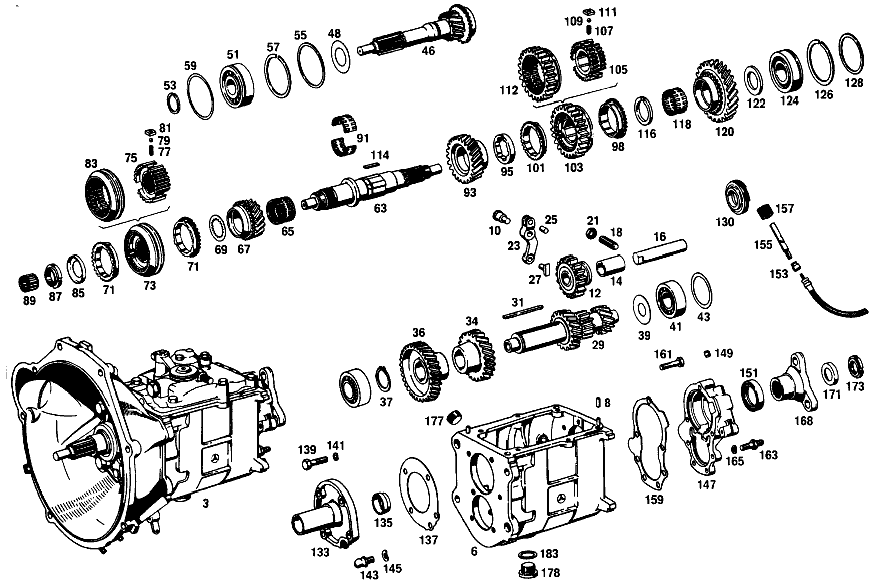

| № | Артикул | Название | Кол. | Примечание | Ограничение |
|---|---|---|---|---|---|
| 3 | A 111 260 09 04 | КОРОБКА ПЕРЕДАЧ | 1 | с BELL HOUSING Рулевое управление: ВлевоКоробка передач [002] NOT FOR USE WITH MERCEDES-BENZ HYDRAULIC-AUTOMATIC CLUTCH | |
| 6 | A 111 260 04 11 | Корпус коробки передач | 1 | Коробка передач | |
| 8 | N 000007 006205 | - Цилиндрический штифт | 2 | Коробка передач | |
| 10 | A 111 262 00 74 | - Палец | 1 | для INTERMEDIATE LEVER Коробка передач | |
| 12 | A 120 260 03 25 | Шестерня заднего хода | 1 | Коробка передач | |
| 14 | A 120 263 03 50 | - втулка | 1 | Коробка передач | |
| 16 | A 186 263 00 30 | Ось шестерни заднего хода | 1 | Коробка передач | |
| 18 | N 000417 010006 | РЕЗЬБОВОЙ ШТИФТ | - | Коробка передач | |
| 21 | N 000934 010014 | Гайка | 1 | Коробка передач | |
| 23 | A 136 260 00 37 | РЫЧАГ | 1 | ДЛЯ ПЕРЕДАЧИ ЗАДН. ХОДА Коробка передач | |
| 25 | N 900037 008104 | - Установочный штифт | 1 | Коробка передач | |
| 27 | A 121 263 01 23 | Скользящая муфта | 1 | для REVERSE SPEED GEAR Коробка передач | |
| 29 | A 111 260 03 24 | ПРОМЕЖУТОЧНЫЙ ВАЛ | 1 | Коробка передач [002] NOT FOR USE WITH MERCEDES-BENZ HYDRAULIC-AUTOMATIC CLUTCH [005] FROM TRANSMISSION 063031 | |
| 29 | A 111 260 03 24 | ПРОМЕЖУТОЧНЫЙ ВАЛ | 1 | Коробка передач [003] ONLY FOR USE WITH MERCEDES-BENZ HYDRAULIC-AUTOMATIC CLUTCH [007] FROM TRANSMISSION 004358 | |
| 29 | A 110 263 07 02 | Промвал коробки передач | 1 | Коробка передач [002] NOT FOR USE WITH MERCEDES-BENZ HYDRAULIC-AUTOMATIC CLUTCH [007] FROM TRANSMISSION 004358 | |
| 31 | A 186 991 03 68 | Призматическая шпонка | 1 | Коробка передач | |
| 34 | A 111 263 00 13 | Шестерня | 1 | 38 TEETH; 3RD SPEED Коробка передач [002] NOT FOR USE WITH MERCEDES-BENZ HYDRAULIC-AUTOMATIC CLUTCH [009] FROM TRANSMISSION 163396 ALSO INSTALLED ON 144331-147830 | |
| 36 | A 180 263 04 10 | ШЕСТЕРНЯ | 1 | 45 TEETH; 4TH SPEED Коробка передач | |
| 37 | N 900055 035300 | Стопорное кольцо | 1 | Коробка передач [402] БОЛЬШЕ НЕ ПОСТАВЛЯЕТСЯ | |
| 39 | A 186 990 18 40 | Диск | 1 | Коробка передач | |
| 41 | A 001 981 71 25 | ШАРИКОПОДШИПНИК | - | Коробка передач | |
| 41 | A 004 981 42 01 | Подшипник с цил. роликами | 2 | Коробка передач | |
| 43 | A 120 263 08 52 | Компенсационная шайба | NB | ПО НЕОБХОДИМОСТИ 1.00 MM Коробка передач | |
| 46 | A 112 260 05 20 | ПРИВОДНОЙ ВАЛ | 1 | с SYNCHRONIZING CONE Коробка передач [002] NOT FOR USE WITH MERCEDES-BENZ HYDRAULIC-AUTOMATIC CLUTCH [011] FROM TRANSMISSION 022626 | |
| 48 | A 186 262 00 66 | Маслозащитное кольцо | 1 | Коробка передач | |
| 51 | N 000625 606306 | Шарикоподшипник | 1 | С УКРЫВ.ШАЙБОЙ Коробка передач | |
| 53 | A 123 262 04 94 | Пруж. стопорное кольцо | 1 | Коробка передач | |
| 55 | A 186 262 04 51 | Проставочное кольцо | 1 | Коробка передач | |
| 57 | A 136 994 06 35 | Пруж. стопорное кольцо | 1 | ПО НЕОБХОДИМОСТИ 1.90 MM Коробка передач | |
| 59 | A 136 262 06 52 | Компенсационная шайба | NB | ПО НЕОБХОДИМОСТИ 0.10 MM Коробка передач | |
| 63 | A 180 262 01 05 | Вторичный вал | 1 | Коробка передач | |
| 65 | A 001 981 68 10 | ПОДШИПНИК ИГОЛЬЧАТЫЙ | 1 | 3RD SPEED GEAR Коробка передач | |
| 67 | A 111 260 03 44 | Цил. косозубая шестерня | 1 | ТРЕТЬЯ ПЕРЕДАЧА Коробка передач | |
| 69 | A 120 262 23 62 | Упорная шайба | 1 | 3RD SPEED GEAR Коробка передач | |
| 71 | A 113 262 00 34 | Кольцо синхронизатора | 2 | 3RD AND 4TH SPEED Коробка передач | |
| 73 | A 111 260 08 45 | Корпус синхронизатора | 1 | 3RD AND 4TH SPEED Коробка передач | |
| 75 | A 111 262 04 35 | - Корпус синхронизатора | - | Коробка передач [417] БОЛЬШЕ НЕ ПОСТАВЛЯЕТСЯ, ЗАКАЗЫВАТЬ КОМПЛЕКТ ПОСТАВКИ [403] НЕ УСТАНОВЛЕНО | |
| 77 | A 180 993 41 01 | - пружина | 3 | Коробка передач | |
| 79 | N 005401 306500 | - Шар | 3 | 6.5mm Коробка передач | |
| 81 | A 121 262 00 40 | - Поводок | 3 | Коробка передач | |
| 83 | A 111 262 04 23 | - СКОЛЬЗ. МУФТА СИНХРОНИЗ. | - | Коробка передач [402] БОЛЬШЕ НЕ ПОСТАВЛЯЕТСЯ | |
| 85 | A 120 994 01 15 | Стопорная шайба | 1 | для MAIN SHAFT,FRONT Коробка передач | |
| 87 | A 120 262 03 26 | Шлицевая гайка | 1 | для MAIN SHAFT,FRONT Коробка передач | |
| 89 | A 000 981 63 12 | СЕПАРАТОР ИГОЛЬЧ. ПОДШ. | - | Коробка передач | |
| 89 | A 002 981 34 12 | Сепаратор роликоподш. | 1 | Коробка передач | |
| 91 | A 120 981 03 12 | Сепаратор роликоподш. | 1 | РАЗДЕЛЬН. Коробка передач | |
| 93 | A 110 262 02 12 | ШЕСТЕРНЯ | 1 | Коробка передач [002] NOT FOR USE WITH MERCEDES-BENZ HYDRAULIC-AUTOMATIC CLUTCH [005] FROM TRANSMISSION 063031 | |
| 93 | A 110 262 02 12 | ШЕСТЕРНЯ | 1 | Коробка передач [003] ONLY FOR USE WITH MERCEDES-BENZ HYDRAULIC-AUTOMATIC CLUTCH [007] FROM TRANSMISSION 004358 | |
| 95 | A 120 262 16 62 | ШАЙБА УПОРНАЯ | 1 | ПО НЕОБХОДИМОСТИ 7.90 MM Коробка передач | |
| 98 | A 113 262 00 34 | Кольцо синхронизатора | 1 | 1ST SPEED Коробка передач | |
| 101 | A 113 262 00 34 | Кольцо синхронизатора | 1 | 2ND SPEED Коробка передач | |
| 103 | A 111 260 07 45 | СИНХРОНИЗАТОР | 1 | 1ST AND 2ND SPEED Коробка передач | |
| 105 | A 111 262 03 35 | - СИНХРОНИЗАТОР | - | Коробка передач [402] БОЛЬШЕ НЕ ПОСТАВЛЯЕТСЯ | |
| 107 | A 180 993 41 01 | - пружина | 3 | Коробка передач | |
| 109 | N 005401 306500 | - Шар | 3 | 6.5mm Коробка передач | |
| 111 | A 121 262 00 40 | - Поводок | 3 | Коробка передач | |
| 112 | A 111 262 03 23 | - СКОЛЬЗ. МУФТА СИНХРОНИЗ. | - | Коробка передач [417] БОЛЬШЕ НЕ ПОСТАВЛЯЕТСЯ, ЗАКАЗЫВАТЬ КОМПЛЕКТ ПОСТАВКИ [402] БОЛЬШЕ НЕ ПОСТАВЛЯЕТСЯ | |
| 114 | A 120 262 00 81 | Вставной клин | 1 | MAIN SHAFT,1ST AND 2ND SPEED Коробка передач | |
| 116 | A 120 262 11 62 | Упорная шайба | 1 | ПО НЕОБХОДИМОСТИ 4.40 MM Коробка передач | |
| 118 | A 001 981 69 10 | Игольчатый подшипник | 1 | 1ST SPEED GEAR Коробка передач | |
| 120 | A 110 262 01 11 | ШЕСТЕРНЯ | 1 | ПЕРВАЯ ПЕРЕДАЧА Коробка передач [002] NOT FOR USE WITH MERCEDES-BENZ HYDRAULIC-AUTOMATIC CLUTCH [009] FROM TRANSMISSION 163396 ALSO INSTALLED ON 144331-147830 | |
| 122 | A 186 262 01 62 | Упорная шайба | 1 | ПО НЕОБХОДИМОСТИ 3.80 MM Коробка передач | |
| 124 | A 002 981 06 25 | ШАРИКОПОДШИПНИК | 1 | ||
| 126 | A 000 994 16 40 | СТОПОРН. КОЛЬЦО | 1 | Коробка передач | |
| 128 | A 136 262 04 52 | Компенсационная шайба | NB | ПО НЕОБХОДИМОСТИ 0.10 MM Коробка передач | |
| 130 | A 110 264 00 30 | Ведущее колесо | 1 | Коробка передач | |
| 133 | A 111 260 06 21 | КРЫШКА КОРПУСА | 1 | СПЕРЕДИ Коробка передач [002] NOT FOR USE WITH MERCEDES-BENZ HYDRAULIC-AUTOMATIC CLUTCH [015] FROM TRANSMISSION 159637 [016] UP TO TRANSMISSION 230591 | |
| 133 | A 111 260 08 21 | КРЫШКА КОРПУСА | 1 | Коробка передач [002] NOT FOR USE WITH MERCEDES-BENZ HYDRAULIC-AUTOMATIC CLUTCH [017] FROM TRANSMISSION 230592 | |
| 133 | A 111 260 05 21 | КРЫШКА КОРПУСА | 1 | СПЕРЕДИ Коробка передач [003] ONLY FOR USE WITH MERCEDES-BENZ HYDRAULIC-AUTOMATIC CLUTCH | |
| 135 | A 186 261 00 60 | - Уплотнительное кольцо | 1 | Коробка передач | |
| 137 | A 111 261 03 79 | Уплотнительная прокладка | 1 | для TRANSMISSION CASE FRONT COVER Коробка передач [002] NOT FOR USE WITH MERCEDES-BENZ HYDRAULIC-AUTOMATIC CLUTCH [017] FROM TRANSMISSION 230592 | |
| 139 | N 000931 008046 | Винт | - | Коробка передач | |
| 139 | N 304017 008018 | Винт с 6-гранной головкой | 4 | TRANSMISSION CASE FRONT COVER TO TRANSMISSION CASE; M8X35 Коробка передач [002] NOT FOR USE WITH MERCEDES-BENZ HYDRAULIC-AUTOMATIC CLUTCH | |
| 141 | N 000137 008204 | Пружинная шайба | - | Коробка передач | |
| 141 | N 000137 008212 | Пружинная шайба | 4 | TRANSMISSION CASE FRONT COVER TO TRANSMISSION CASE Коробка передач [002] NOT FOR USE WITH MERCEDES-BENZ HYDRAULIC-AUTOMATIC CLUTCH | |
| 143 | A 111 991 00 15 | Шаровой палец | 1 | для RELEASE YOKE Коробка передач [002] NOT FOR USE WITH MERCEDES-BENZ HYDRAULIC-AUTOMATIC CLUTCH [017] FROM TRANSMISSION 230592 | |
| 145 | N 000137 010201 | Пружинная шайба | 1 | Коробка передач [002] NOT FOR USE WITH MERCEDES-BENZ HYDRAULIC-AUTOMATIC CLUTCH [017] FROM TRANSMISSION 230592 | |
| 147 | A 111 260 04 16 | Крышка корпуса | 1 | СЗАДИ Коробка передач | |
| 149 | A 153 264 00 55 | - Пробка | 1 | Коробка передач | |
| 151 | A 000 997 17 46 | УПЛОТНИТ. КОЛЬЦО | 1 | ВТОРИЧНЫЙ ВАЛ Коробка передач | |
| 153 | A 115 274 00 60 | УПЛОТНИТ. КОЛЬЦО | 1 | ПРИВОД СПИДОМЕТРА Коробка передач [402] БОЛЬШЕ НЕ ПОСТАВЛЯЕТСЯ | |
| 155 | A 111 264 00 32 | Вал | 1 | ПРИВОД СПИДОМЕТРА Коробка передач | |
| 157 | A 115 260 06 48 | ПРИВОДНАЯ ШЕСТЕРНЯ | 1 | ПРИВОД СПИДОМЕТРА Коробка передач | |
| 159 | A 111 261 00 79 | Уплотнительная прокладка | 1 | КРЫШКА КОРПУСА КП СЗАДИ НА КОРПУСЕ КП Коробка передач | |
| 161 | N 000931 008046 | Винт | - | Коробка передач | |
| 161 | N 304017 008018 | Винт с 6-гранной головкой | 3 | КРЫШКА КОРПУСА КП СЗАДИ НА КОРПУСЕ КП; M8X35 Коробка передач | |
| 163 | A 110 990 00 10 | БОЛТ | 4 | КРЫШКА КОРПУСА КП СЗАДИ НА КОРПУСЕ КП Коробка передач | |
| 165 | N 000137 008204 | Пружинная шайба | - | Коробка передач | |
| 165 | N 000137 008212 | Пружинная шайба | 7 | КРЫШКА КОРПУСА КП СЗАДИ НА КОРПУСЕ КП Коробка передач | |
| 168 | A 111 262 00 45 | Фланец | 1 | Коробка передач | |
| 171 | A 186 262 01 73 | предохранитель | 1 | Коробка передач | |
| 173 | A 186 262 02 26 | Шлицевая гайка | 1 | Коробка передач | |
| 177 | A 186 997 00 32 | ЗАГЛУШКА РЕЗЬБОВАЯ | 1 | ЗАПРАВКА МАСЛА; M24X1,5 Коробка передач | |
| 178 | A 094 997 24 00 | Резьбовая пробка | - | Коробка передач | |
| 178 | A 210 997 01 32 | Резьбовая пробка | 1 | СЛИВ МАСЛА Коробка передач | |
| 183 | N 007603 024100 | УПЛОТНИТ. КОЛЬЦО | 1 | СЛИВ МАСЛА Коробка передач | |
| 186 | A 111 260 32 14 | КРЫШКА КОРПУСА | 1 | СВЕРХУ Коробка передач | |
| 186 | A 111 260 33 14 | КРЫШКА КОРПУСА | - | СВЕРХУ Рулевое управление: ВправоКоробка передач | |
| 186 | A 111 260 33 14 | КРЫШКА КОРПУСА | 1 | TOP,с SELECTOR LEVER без GEARSHIFT LEVER Рулевое управление: ВправоКоробка передач | |
| 186 | A 111 260 12 14 | КРЫШКА КОРПУСА | - | Коробка передач | |
| 186 | A 111 260 34 14 | КРЫШКА КОРПУСА | 1 | СВЕРХУ Коробка передач [002] NOT FOR USE WITH MERCEDES-BENZ HYDRAULIC-AUTOMATIC CLUTCH [001] ON SPECIAL REQUEST,FLOOR SHIFT | |
| 189 | A 111 260 23 14 | - КРЫШКА КОРПУСА | - | Коробка передач [002] NOT FOR USE WITH MERCEDES-BENZ HYDRAULIC-AUTOMATIC CLUTCH [003] ONLY FOR USE WITH MERCEDES-BENZ HYDRAULIC-AUTOMATIC CLUTCH [021] FROM TRANSMISSION 006210 [019] FROM TRANSMISSION 126213 | |
| 191 | A 153 992 00 05 | - втулка | 1 | Коробка передач | |
| 193 | A 136 265 00 48 | - Запор | 1 | Коробка передач | |
| 195 | A 180 993 26 01 | - пружина | 1 | Коробка передач | |
| 197 | A 121 997 01 30 | - ЗАГЛУШКА РЕЗЬБОВАЯ | 1 | Коробка передач [402] БОЛЬШЕ НЕ ПОСТАВЛЯЕТСЯ | |
| 199 | A 094 990 92 07 | - Уплотнительное кольцо | 1 | Коробка передач | |
| 201 | A 136 265 02 47 | - Палец | 2 | Коробка передач | |
| 203 | A 183 265 00 46 | - Фиксирующая пластина | 1 | Коробка передач | |
| 205 | A 319 268 05 32 | - ВАЛ | 1 | Коробка передач | |
| 205 | A 198 268 02 32 | - ВАЛ | - | Коробка передач | |
| 205 | A 111 260 00 38 | - ВАЛ | 1 | Коробка передач [002] NOT FOR USE WITH MERCEDES-BENZ HYDRAULIC-AUTOMATIC CLUTCH [001] ON SPECIAL REQUEST,FLOOR SHIFT | |
| 207 | A 186 268 00 33 | - КУЛАЧОК ПЕРЕКЛЮЧЕНИЯ | 1 | Коробка передач | |
| 210 | A 183 268 00 52 | - Компенсационная шайба | 1 | Коробка передач | |
| 212 | A 000 981 01 10 | - Игольчатый подшипник | 2 | Коробка передач | |
| 214 | A 186 997 01 20 | - ПРОБКА | 1 | Коробка передач | |
| 216 | N 000472 022000 | - Стопорное кольцо | 1 | Коробка передач | |
| 218 | N 006503 012100 | - Уплотнительное кольцо | 1 | Коробка передач | |
| 223 | A 111 260 01 79 | - Палец выбора передач | 1 | Коробка передач | |
| 225 | A 186 997 11 40 | - Уплотнительное кольцо | 1 | для SELECTOR FINGER Коробка передач | |
| 227 | A 110 260 01 37 | - РЫЧАГ | 1 | Рулевое управление: ВлевоКоробка передач | |
| 229 | A 000 992 01 10 | - втулка | 1 | Коробка передач [002] NOT FOR USE WITH MERCEDES-BENZ HYDRAULIC-AUTOMATIC CLUTCH [023] FROM TRANSMISSION 093133 | |
| 229 | A 000 992 01 10 | втулка | 1 | Коробка передач [003] ONLY FOR USE WITH MERCEDES-BENZ HYDRAULIC-AUTOMATIC CLUTCH [025] FROM TRANSMISSION 005563 | |
| 231 | A 186 260 03 28 | - ПЛАСТИНА НАПРАВЛЯЮЩАЯ | 1 | Коробка передач [002] NOT FOR USE WITH MERCEDES-BENZ HYDRAULIC-AUTOMATIC CLUTCH [019] FROM TRANSMISSION 126213 | |
| 231 | A 186 260 03 28 | ПЛАСТИНА НАПРАВЛЯЮЩАЯ | 1 | Коробка передач [003] ONLY FOR USE WITH MERCEDES-BENZ HYDRAULIC-AUTOMATIC CLUTCH [021] FROM TRANSMISSION 006210 | |
| 233 | A 136 990 82 40 | - Диск | 2 | GUIDE BOLT TO GUIDE PLATE Коробка передач | |
| 235 | A 136 265 02 72 | - гайка | 2 | GUIDE BOLT TO GUIDE PLATE Коробка передач | |
| 237 | A 186 265 00 01 | - ВИЛКА ПЕРЕКЛЮЧЕНИЯ | 1 | Коробка передач | |
| 239 | A 309 265 01 02 | - Вилка перекл.передач | 1 | THIRD AND FOURTH SPEED Коробка передач | |
| 241 | A 180 265 01 07 | - Ручка рычага перекл.пер. | 1 | ДЛЯ ПЕРЕДАЧИ ЗАДН. ХОДА Коробка передач | |
| 243 | A 186 993 13 01 | - пружина | 3 | Коробка передач | |
| 245 | N 005401 308000 | - Шар | 3 | Коробка передач | |
| 247 | A 136 265 00 53 | - Проставочная трубка | 2 | для SHIFTING FORK Коробка передач | |
| 250 | A 136 265 01 53 | - Проставочная трубка | 1 | для SHIFTING HEAD Коробка передач | |
| 252 | A 111 990 34 40 | - Диск | 3 | ПО НЕОБХОДИМОСТИ 0.3 MM Коробка передач | |
| 254 | A 309 265 03 05 | - ТЯГА ПЕРЕКЛ. ПЕРЕДАЧ | 1 | FIRST AND SECOND SPEED Коробка передач | |
| 256 | A 309 265 04 05 | - ТЯГА ПЕРЕКЛ. ПЕРЕДАЧ | 1 | THIRD AND FOURTH SPEED Коробка передач | |
| 258 | A 136 265 02 04 | - ТЯГА ПЕРЕКЛ. ПЕРЕДАЧ | 1 | ДЛЯ ПЕРЕДАЧИ ЗАДН. ХОДА Коробка передач | |
| 261 | A 184 265 00 53 | - Проставочная трубка | 2 | SHIFTING ROD Коробка передач | |
| 263 | A 136 265 00 81 | - Клин | 1 | SHIFTING ROD MOUNTING Коробка передач | |
| 265 | A 094 260 11 00 | - Воздушный клапан | 1 | Коробка передач | |
| 267 | A 110 260 04 37 | Рычаг | 1 | для SHIFTING SHAFT Рулевое управление: ВлевоКоробка передач | |
| 269 | A 000 992 01 10 | - втулка | 1 | Коробка передач [002] NOT FOR USE WITH MERCEDES-BENZ HYDRAULIC-AUTOMATIC CLUTCH [023] FROM TRANSMISSION 093133 | |
| 269 | A 000 992 01 10 | - втулка | 1 | Коробка передач [003] ONLY FOR USE WITH MERCEDES-BENZ HYDRAULIC-AUTOMATIC CLUTCH [025] FROM TRANSMISSION 005563 | |
| 273 | A 111 261 01 79 | ПРОКЛАДКА УПЛОТНИТЕЛЬНАЯ | 1 | Коробка передач [002] NOT FOR USE WITH MERCEDES-BENZ HYDRAULIC-AUTOMATIC CLUTCH [019] FROM TRANSMISSION 126213 | |
| 273 | A 111 261 01 79 | ПРОКЛАДКА УПЛОТНИТЕЛЬНАЯ | 1 | Коробка передач [003] ONLY FOR USE WITH MERCEDES-BENZ HYDRAULIC-AUTOMATIC CLUTCH [021] FROM TRANSMISSION 006210 | |
| 275 | N 000931 008171 | БОЛТ | 4 | Коробка передач | |
| 277 | N 000931 008246 | Винт | - | Коробка передач | |
| 277 | N 304017 008028 | Винт с 6-гранной головкой | 2 | Коробка передач [002] NOT FOR USE WITH MERCEDES-BENZ HYDRAULIC-AUTOMATIC CLUTCH [019] FROM TRANSMISSION 126213 | |
| 277 | N 304017 008028 | Винт с 6-гранной головкой | 2 | Коробка передач [003] ONLY FOR USE WITH MERCEDES-BENZ HYDRAULIC-AUTOMATIC CLUTCH [021] FROM TRANSMISSION 006210 | |
| 279 | N 000137 008204 | Пружинная шайба | - | Коробка передач | |
| 279 | N 000137 008212 | Пружинная шайба | 6 | Коробка передач | |
| 281 | A 000 545 12 06 | Переключатель | 1 | СВЕТ ФАРЫ ЗАДНЕГО ХОДА Коробка передач [002] NOT FOR USE WITH MERCEDES-BENZ HYDRAULIC-AUTOMATIC CLUTCH [019] FROM TRANSMISSION 126213 | |
| 281 | A 000 545 12 06 | Переключатель | 1 | Коробка передач [003] ONLY FOR USE WITH MERCEDES-BENZ HYDRAULIC-AUTOMATIC CLUTCH [021] FROM TRANSMISSION 006210 | |
| 283 | A 000 545 24 28 | ШТЕКЕР | 1 | ДВУХПОЛЮСНЫЙ Коробка передач | |
| 285 | A 094 990 92 07 | Уплотнительное кольцо | 1 | для BACK\-UP LIGHT SWITCH Коробка передач [002] NOT FOR USE WITH MERCEDES-BENZ HYDRAULIC-AUTOMATIC CLUTCH [019] FROM TRANSMISSION 126213 | |
| 285 | A 094 990 92 07 | Уплотнительное кольцо | 1 | для BACK\-UP LIGHT SWITCH Коробка передач [003] ONLY FOR USE WITH MERCEDES-BENZ HYDRAULIC-AUTOMATIC CLUTCH [021] FROM TRANSMISSION 006210 | |
| 287 | A 111 546 01 43 | ДЕРЖАТЕЛЬ | 1 | для CABLE TO BACK\-UP LIGHT SWITCH Коробка передач [002] NOT FOR USE WITH MERCEDES-BENZ HYDRAULIC-AUTOMATIC CLUTCH [019] FROM TRANSMISSION 126213 | |
| 287 | A 111 546 01 43 | ДЕРЖАТЕЛЬ | 1 | для CABLE TO BACK\-UP LIGHT SWITCH Коробка передач [003] ONLY FOR USE WITH MERCEDES-BENZ HYDRAULIC-AUTOMATIC CLUTCH [021] FROM TRANSMISSION 006210 | |
| 290 | A 094 988 15 00 | Скоба | 1 | для CABLE TO BACK\-UP LIGHT SWITCH Коробка передач [002] NOT FOR USE WITH MERCEDES-BENZ HYDRAULIC-AUTOMATIC CLUTCH [019] FROM TRANSMISSION 126213 | |
| 290 | A 094 988 15 00 | Скоба | 1 | для CABLE TO BACK\-UP LIGHT SWITCH Коробка передач [003] ONLY FOR USE WITH MERCEDES-BENZ HYDRAULIC-AUTOMATIC CLUTCH [021] FROM TRANSMISSION 006210 | |
| 292 | A 111 260 13 82 | ТЯГА ПЕРЕКЛЮЧЕНИЯ | 1 | Коробка передач [026] 010 UP TO CHASSIS 017603 EXCEPT FOR,SEE FOOTNOTE 39;012 UP TO CHASSIS 036824 EXCEPT FOR,SEE FOOTNOTE 38 [039] 017529, 017569, 017573, 017574, 017576- 017582, 017584- 017590, 017592- 017594, 017596- 017602. [038] 035451, 036003- 036005, 036007- 036009, 036011- 036020, 036022- 036025, 036027- 036054, 036056- 036070, 036072- 036085, 036087- 036115, 036117- 036139, 036141- 036624, 036626- 036633, 036635, 036636, 036639, 036641- 036646, 036648- 036650, 036654, 036657, 036661, 036668, 036670, 036672, 036675, 036684, 036693, 036694, 036709, 036725, 036728, 036731, 036736, 036743, 036748, 036751, 036752, 036782, 036800. | |
| 292 | A 111 260 25 82 | ТЯГА ПЕРЕКЛЮЧЕНИЯ | 1 | Коробка передач [002] NOT FOR USE WITH MERCEDES-BENZ HYDRAULIC-AUTOMATIC CLUTCH [027] 010 FROM CHASSIS 017604 ALSO INSTALLED ON,SEE FOOTNOTE 39;012 FROM CHASSIS 036825 ALSO INSTALLED ON,SEE FOOTNOTE 38 [039] 017529, 017569, 017573, 017574, 017576- 017582, 017584- 017590, 017592- 017594, 017596- 017602. [038] 035451, 036003- 036005, 036007- 036009, 036011- 036020, 036022- 036025, 036027- 036054, 036056- 036070, 036072- 036085, 036087- 036115, 036117- 036139, 036141- 036624, 036626- 036633, 036635, 036636, 036639, 036641- 036646, 036648- 036650, 036654, 036657, 036661, 036668, 036670, 036672, 036675, 036684, 036693, 036694, 036709, 036725, 036728, 036731, 036736, 036743, 036748, 036751, 036752, 036782, 036800. | |
| 292 | A 111 260 21 82 | ТЯГА ПЕРЕКЛЮЧЕНИЯ | 1 | Коробка передач [003] ONLY FOR USE WITH MERCEDES-BENZ HYDRAULIC-AUTOMATIC CLUTCH [027] 010 FROM CHASSIS 017604 ALSO INSTALLED ON,SEE FOOTNOTE 39;012 FROM CHASSIS 036825 ALSO INSTALLED ON,SEE FOOTNOTE 38 [039] 017529, 017569, 017573, 017574, 017576- 017582, 017584- 017590, 017592- 017594, 017596- 017602. [038] 035451, 036003- 036005, 036007- 036009, 036011- 036020, 036022- 036025, 036027- 036054, 036056- 036070, 036072- 036085, 036087- 036115, 036117- 036139, 036141- 036624, 036626- 036633, 036635, 036636, 036639, 036641- 036646, 036648- 036650, 036654, 036657, 036661, 036668, 036670, 036672, 036675, 036684, 036693, 036694, 036709, 036725, 036728, 036731, 036736, 036743, 036748, 036751, 036752, 036782, 036800. | |
| 294 | A 111 268 00 18 | РЫЧАГ УПОРНЫЙ | 1 | для WARNING LAMP Коробка передач [003] ONLY FOR USE WITH MERCEDES-BENZ HYDRAULIC-AUTOMATIC CLUTCH [402] БОЛЬШЕ НЕ ПОСТАВЛЯЕТСЯ [027] 010 FROM CHASSIS 017604 ALSO INSTALLED ON,SEE FOOTNOTE 39;012 FROM CHASSIS 036825 ALSO INSTALLED ON,SEE FOOTNOTE 38 [039] 017529, 017569, 017573, 017574, 017576- 017582, 017584- 017590, 017592- 017594, 017596- 017602. [038] 035451, 036003- 036005, 036007- 036009, 036011- 036020, 036022- 036025, 036027- 036054, 036056- 036070, 036072- 036085, 036087- 036115, 036117- 036139, 036141- 036624, 036626- 036633, 036635, 036636, 036639, 036641- 036646, 036648- 036650, 036654, 036657, 036661, 036668, 036670, 036672, 036675, 036684, 036693, 036694, 036709, 036725, 036728, 036731, 036736, 036743, 036748, 036751, 036752, 036782, 036800. | |
| 296 | N 000933 006103 | Винт | - | Коробка передач | |
| 296 | N 304017 006018 | Винт с 6-гранной головкой | 1 | M6X12 Коробка передач [003] ONLY FOR USE WITH MERCEDES-BENZ HYDRAULIC-AUTOMATIC CLUTCH [027] 010 FROM CHASSIS 017604 ALSO INSTALLED ON,SEE FOOTNOTE 39;012 FROM CHASSIS 036825 ALSO INSTALLED ON,SEE FOOTNOTE 38 [039] 017529, 017569, 017573, 017574, 017576- 017582, 017584- 017590, 017592- 017594, 017596- 017602. [038] 035451, 036003- 036005, 036007- 036009, 036011- 036020, 036022- 036025, 036027- 036054, 036056- 036070, 036072- 036085, 036087- 036115, 036117- 036139, 036141- 036624, 036626- 036633, 036635, 036636, 036639, 036641- 036646, 036648- 036650, 036654, 036657, 036661, 036668, 036670, 036672, 036675, 036684, 036693, 036694, 036709, 036725, 036728, 036731, 036736, 036743, 036748, 036751, 036752, 036782, 036800. | |
| 298 | A 094 990 68 10 | Пружинное кольцо | 1 | Коробка передач [003] ONLY FOR USE WITH MERCEDES-BENZ HYDRAULIC-AUTOMATIC CLUTCH [027] 010 FROM CHASSIS 017604 ALSO INSTALLED ON,SEE FOOTNOTE 39;012 FROM CHASSIS 036825 ALSO INSTALLED ON,SEE FOOTNOTE 38 [039] 017529, 017569, 017573, 017574, 017576- 017582, 017584- 017590, 017592- 017594, 017596- 017602. [038] 035451, 036003- 036005, 036007- 036009, 036011- 036020, 036022- 036025, 036027- 036054, 036056- 036070, 036072- 036085, 036087- 036115, 036117- 036139, 036141- 036624, 036626- 036633, 036635, 036636, 036639, 036641- 036646, 036648- 036650, 036654, 036657, 036661, 036668, 036670, 036672, 036675, 036684, 036693, 036694, 036709, 036725, 036728, 036731, 036736, 036743, 036748, 036751, 036752, 036782, 036800. | |
| 301 | A 111 268 05 39 | НАПРАВЛЯЮЩ. ЦАПФА | 1 | Коробка передач [002] NOT FOR USE WITH MERCEDES-BENZ HYDRAULIC-AUTOMATIC CLUTCH [029] 010 FROM CHASSIS 000756;012 FROM CHASSIS 001723 | |
| 303 | A 111 997 12 40 | Уплотнительное кольцо | 2 | Коробка передач | |
| 305 | A 186 990 69 40 | Диск | 1 | Коробка передач [002] NOT FOR USE WITH MERCEDES-BENZ HYDRAULIC-AUTOMATIC CLUTCH [029] 010 FROM CHASSIS 000756;012 FROM CHASSIS 001723 | |
| 305 | A 186 990 69 40 | Диск | 1 | Коробка передач [003] ONLY FOR USE WITH MERCEDES-BENZ HYDRAULIC-AUTOMATIC CLUTCH | |
| 307 | A 186 268 02 73 | предохранитель | 1 | Коробка передач [002] NOT FOR USE WITH MERCEDES-BENZ HYDRAULIC-AUTOMATIC CLUTCH [029] 010 FROM CHASSIS 000756;012 FROM CHASSIS 001723 | |
| 307 | A 186 268 02 73 | предохранитель | 1 | Коробка передач [003] ONLY FOR USE WITH MERCEDES-BENZ HYDRAULIC-AUTOMATIC CLUTCH | |
| 310 | A 186 268 02 74 | Палец | 1 | Коробка передач | |
| 312 | A 182 993 08 01 | пружина | 1 | Коробка передач | |
| 314 | A 111 268 03 97 | Манжета | 1 | Коробка передач | |
| 316 | A 180 268 05 24 | Рычаг перекл.передач | 1 | Коробка передач [002] NOT FOR USE WITH MERCEDES-BENZ HYDRAULIC-AUTOMATIC CLUTCH | |
| 318 | A 180 260 02 39 | РЫЧАГ ПЕРЕКЛЮЧЕНИЯ | 1 | Коробка передач [003] ONLY FOR USE WITH MERCEDES-BENZ HYDRAULIC-AUTOMATIC CLUTCH | |
| 321 | A 180 540 07 38 | - ЭЛ. ПРОВОД | 1 | с TERMINAL Коробка передач [003] ONLY FOR USE WITH MERCEDES-BENZ HYDRAULIC-AUTOMATIC CLUTCH | |
| 323 | A 180 260 03 39 | - РЫЧАГ ПЕРЕКЛЮЧЕНИЯ | 1 | с CONTACT RING Коробка передач [003] ONLY FOR USE WITH MERCEDES-BENZ HYDRAULIC-AUTOMATIC CLUTCH | |
| 325 | A 180 268 01 72 | - ГАЙКА | 1 | Коробка передач [003] ONLY FOR USE WITH MERCEDES-BENZ HYDRAULIC-AUTOMATIC CLUTCH | |
| 327 | A 180 994 03 10 | - ПРЕДОХРАНИТЕЛЬ | 1 | Коробка передач [003] ONLY FOR USE WITH MERCEDES-BENZ HYDRAULIC-AUTOMATIC CLUTCH | |
| 329 | A 180 268 02 57 | - ПРОБКА | 1 | Коробка передач [003] ONLY FOR USE WITH MERCEDES-BENZ HYDRAULIC-AUTOMATIC CLUTCH | |
| 331 | A 180 993 30 01 | - ПРУЖИНА | 1 | Коробка передач [003] ONLY FOR USE WITH MERCEDES-BENZ HYDRAULIC-AUTOMATIC CLUTCH | |
| 333 | A 180 268 04 76 | - ШАЙБА | 1 | Коробка передач [003] ONLY FOR USE WITH MERCEDES-BENZ HYDRAULIC-AUTOMATIC CLUTCH | |
| 335 | A 111 268 03 92 | РЕЗИНОВАЯ ПОДУШКА | 1 | Коробка передач | |
| 337 | A 180 268 00 57 | Колпачок | 1 | Коробка передач | |
| 339 | A 180 268 05 40 | ДЕРЖАТЕЛЬ | - | Коробка передач | |
| 339 | A 108 268 02 42 | Кнопка ручки рычага КП | 1 | DARK GRAPHITE GREY Коробка передач | |
| 343 | A 111 260 28 94 | ОПОРА ПОДШИПНИКА | 1 | Рулевое управление: ВлевоКоробка передач [031] 010 FROM CHASSIS 010679;012 FROM CHASSIS 021915 | |
| 345 | A 000 981 21 10 | - Игольчатый подшипник | 2 | Коробка передач | |
| 347 | A 180 268 02 50 | - ВТУЛКА | 1 | для BACK\-UP LIGHT SWITCH TO 111 260 28 94 AND 111 260 29 94 Коробка передач | |
| 350 | A 111 260 04 15 | РЫЧАГ | 1 | Коробка передач | |
| 353 | A 111 268 10 50 | втулка | 1 | Коробка передач | |
| 356 | A 111 268 02 51 | Проставочное кольцо | 1 | Коробка передач | |
| 359 | N 000137 006204 | Пружинная шайба | 1 | Коробка передач | |
| 363 | N 000934 006007 | Гайка | 4 | Коробка передач | |
| 366 | A 180 268 00 74 | БОЛТ | 1 | для BACK\-UP LIGHT SWITCH Коробка передач [002] NOT FOR USE WITH MERCEDES-BENZ HYDRAULIC-AUTOMATIC CLUTCH [037] UP TO TRANSMISSION 126212 | |
| 366 | A 180 268 00 74 | БОЛТ | 1 | для BACK\-UP LIGHT SWITCH Коробка передач [003] ONLY FOR USE WITH MERCEDES-BENZ HYDRAULIC-AUTOMATIC CLUTCH [020] UP TO TRANSMISSION 006209 | |
| 369 | A 000 545 08 06 | Переключатель | 1 | СВЕТ ФАРЫ ЗАДНЕГО ХОДА Коробка передач [002] NOT FOR USE WITH MERCEDES-BENZ HYDRAULIC-AUTOMATIC CLUTCH [037] UP TO TRANSMISSION 126212 | |
| 369 | A 000 545 08 06 | Переключатель | 1 | Коробка передач [003] ONLY FOR USE WITH MERCEDES-BENZ HYDRAULIC-AUTOMATIC CLUTCH [020] UP TO TRANSMISSION 006209 | |
| 372 | A 111 268 07 05 | Крышка | 1 | Рулевое управление: ВлевоКоробка передач | |
| 375 | A 111 260 21 81 | РЫЧАГ | - | Рулевое управление: ВлевоКоробка передач | |
| 375 | A 111 260 13 81 | РЫЧАГ | 1 | Рулевое управление: ВлевоКоробка передач | |
| 378 | A 000 981 21 10 | - Игольчатый подшипник | 2 | Коробка передач | |
| 381 | A 180 997 08 40 | - УПЛОТНИТ. КОЛЬЦО | 2 | Коробка передач | |
| 384 | A 312 990 03 40 | Диск | 1 | Коробка передач | |
| 387 | N 900055 012001 | Пружинная шайба | 1 | Коробка передач | |
| 390 | N 006799 010001 | Стопорная шайба | 1 | Коробка передач | |
| 393 | N 000127 008203 | Пружинное кольцо | 1 | Коробка передач | |
| 396 | N 000934 008010 | Гайка | - | Коробка передач | |
| 396 | N 304032 008006 | Шестигранная гайка | 1 | M8 Коробка передач | |
| 399 | A 180 268 02 15 | РЫЧАГ | 1 | Коробка передач | |
| 401 | N 000933 006130 | Винт | 1 | Коробка передач | |
| 404 | A 094 990 68 10 | Пружинное кольцо | 1 | Коробка передач | |
| 407 | A 180 268 00 32 | ВАЛ | 1 | Рулевое управление: ВлевоКоробка передач | |
| 409 | A 180 997 08 40 | УПЛОТНИТ. КОЛЬЦО | 1 | Коробка передач | |
| 411 | N 900055 012001 | Пружинная шайба | 1 | Коробка передач | |
| 413 | A 180 260 02 37 | Рычаг | 1 | Рулевое управление: ВлевоКоробка передач | |
| 415 | A 111 260 00 66 | Шаровой подпятник | 1 | Коробка передач | |
| 417 | N 000439 006200 | - Гайка | 1 | Коробка передач | |
| 420 | N 071805 010200 | - Шаровой подпятник | 2 | Коробка передач | |
| 422 | N 071805 010401 | ПОДПЯТНИК ШАРОВОЙ | 2 | Коробка передач | |
| 425 | A 111 260 48 33 | ТЯГА ПЕРЕКЛ. ПЕРЕДАЧ | 1 | Рулевое управление: ВлевоКоробка передач [002] NOT FOR USE WITH MERCEDES-BENZ HYDRAULIC-AUTOMATIC CLUTCH | |
| 428 | N 070616 010000 | Гайка | 1 | Коробка передач | |
| 431 | A 000 991 38 22 | Шаровой подпятник | 1 | Коробка передач | |
| 433 | A 111 260 50 33 | ТЯГА ПЕРЕКЛ. ПЕРЕДАЧ | 1 | Рулевое управление: ВлевоКоробка передач [002] NOT FOR USE WITH MERCEDES-BENZ HYDRAULIC-AUTOMATIC CLUTCH | |
| 435 | N 070616 010000 | Гайка | 1 | Коробка передач | |
| 437 | A 000 991 38 22 | Шаровой подпятник | 1 | Коробка передач | |
| 444 | A 110 990 18 40 | ШАЙБА | 2 | O.D.,22 MM для SELECTOR ROD AND SHIFTING ROD Коробка передач [002] NOT FOR USE WITH MERCEDES-BENZ HYDRAULIC-AUTOMATIC CLUTCH [023] FROM TRANSMISSION 093133 | |
| 444 | A 110 990 18 40 | ШАЙБА | 2 | O.D.,22 MM для SELECTOR ROD AND SHIFTING ROD Коробка передач [003] ONLY FOR USE WITH MERCEDES-BENZ HYDRAULIC-AUTOMATIC CLUTCH [025] FROM TRANSMISSION 005563 | |
| 446 | A 111 260 01 62 | ДЕРЖАТЕЛЬ | 1 | для SWITCH Коробка передач [003] ONLY FOR USE WITH MERCEDES-BENZ HYDRAULIC-AUTOMATIC CLUTCH [027] 010 FROM CHASSIS 017604 ALSO INSTALLED ON,SEE FOOTNOTE 39;012 FROM CHASSIS 036825 ALSO INSTALLED ON,SEE FOOTNOTE 38 [039] 017529, 017569, 017573, 017574, 017576- 017582, 017584- 017590, 017592- 017594, 017596- 017602. [038] 035451, 036003- 036005, 036007- 036009, 036011- 036020, 036022- 036025, 036027- 036054, 036056- 036070, 036072- 036085, 036087- 036115, 036117- 036139, 036141- 036624, 036626- 036633, 036635, 036636, 036639, 036641- 036646, 036648- 036650, 036654, 036657, 036661, 036668, 036670, 036672, 036675, 036684, 036693, 036694, 036709, 036725, 036728, 036731, 036736, 036743, 036748, 036751, 036752, 036782, 036800. | |
| 448 | A 000 545 30 09 | ВЫКЛЮЧАТЕЛЬ | 1 | с REST CONTACT TO SWITCH OFF WARNING LAMP Коробка передач [003] ONLY FOR USE WITH MERCEDES-BENZ HYDRAULIC-AUTOMATIC CLUTCH [027] 010 FROM CHASSIS 017604 ALSO INSTALLED ON,SEE FOOTNOTE 39;012 FROM CHASSIS 036825 ALSO INSTALLED ON,SEE FOOTNOTE 38 [039] 017529, 017569, 017573, 017574, 017576- 017582, 017584- 017590, 017592- 017594, 017596- 017602. [038] 035451, 036003- 036005, 036007- 036009, 036011- 036020, 036022- 036025, 036027- 036054, 036056- 036070, 036072- 036085, 036087- 036115, 036117- 036139, 036141- 036624, 036626- 036633, 036635, 036636, 036639, 036641- 036646, 036648- 036650, 036654, 036657, 036661, 036668, 036670, 036672, 036675, 036684, 036693, 036694, 036709, 036725, 036728, 036731, 036736, 036743, 036748, 036751, 036752, 036782, 036800. | |
| 450 | A 111 268 00 38 | НАПРАВЛЯЮЩАЯ ВТУЛКА | 1 | TO SWITCH OFF WARNING LAMP Коробка передач [003] ONLY FOR USE WITH MERCEDES-BENZ HYDRAULIC-AUTOMATIC CLUTCH [027] 010 FROM CHASSIS 017604 ALSO INSTALLED ON,SEE FOOTNOTE 39;012 FROM CHASSIS 036825 ALSO INSTALLED ON,SEE FOOTNOTE 38 [039] 017529, 017569, 017573, 017574, 017576- 017582, 017584- 017590, 017592- 017594, 017596- 017602. [038] 035451, 036003- 036005, 036007- 036009, 036011- 036020, 036022- 036025, 036027- 036054, 036056- 036070, 036072- 036085, 036087- 036115, 036117- 036139, 036141- 036624, 036626- 036633, 036635, 036636, 036639, 036641- 036646, 036648- 036650, 036654, 036657, 036661, 036668, 036670, 036672, 036675, 036684, 036693, 036694, 036709, 036725, 036728, 036731, 036736, 036743, 036748, 036751, 036752, 036782, 036800. | |
| 452 | A 111 268 02 74 | БОЛТ | 1 | TO SWITCH OFF WARNING LAMP Коробка передач [003] ONLY FOR USE WITH MERCEDES-BENZ HYDRAULIC-AUTOMATIC CLUTCH [027] 010 FROM CHASSIS 017604 ALSO INSTALLED ON,SEE FOOTNOTE 39;012 FROM CHASSIS 036825 ALSO INSTALLED ON,SEE FOOTNOTE 38 [039] 017529, 017569, 017573, 017574, 017576- 017582, 017584- 017590, 017592- 017594, 017596- 017602. [038] 035451, 036003- 036005, 036007- 036009, 036011- 036020, 036022- 036025, 036027- 036054, 036056- 036070, 036072- 036085, 036087- 036115, 036117- 036139, 036141- 036624, 036626- 036633, 036635, 036636, 036639, 036641- 036646, 036648- 036650, 036654, 036657, 036661, 036668, 036670, 036672, 036675, 036684, 036693, 036694, 036709, 036725, 036728, 036731, 036736, 036743, 036748, 036751, 036752, 036782, 036800. | |
| 454 | A 111 993 17 01 | ПРУЖИНА | 1 | TO SWITCH OFF WARNING LAMP Коробка передач [003] ONLY FOR USE WITH MERCEDES-BENZ HYDRAULIC-AUTOMATIC CLUTCH [027] 010 FROM CHASSIS 017604 ALSO INSTALLED ON,SEE FOOTNOTE 39;012 FROM CHASSIS 036825 ALSO INSTALLED ON,SEE FOOTNOTE 38 [039] 017529, 017569, 017573, 017574, 017576- 017582, 017584- 017590, 017592- 017594, 017596- 017602. [038] 035451, 036003- 036005, 036007- 036009, 036011- 036020, 036022- 036025, 036027- 036054, 036056- 036070, 036072- 036085, 036087- 036115, 036117- 036139, 036141- 036624, 036626- 036633, 036635, 036636, 036639, 036641- 036646, 036648- 036650, 036654, 036657, 036661, 036668, 036670, 036672, 036675, 036684, 036693, 036694, 036709, 036725, 036728, 036731, 036736, 036743, 036748, 036751, 036752, 036782, 036800. | |
| 456 | A 111 268 01 74 | БОЛТ | 1 | TO SWITCH OFF WARNING LAMP Коробка передач [003] ONLY FOR USE WITH MERCEDES-BENZ HYDRAULIC-AUTOMATIC CLUTCH [027] 010 FROM CHASSIS 017604 ALSO INSTALLED ON,SEE FOOTNOTE 39;012 FROM CHASSIS 036825 ALSO INSTALLED ON,SEE FOOTNOTE 38 [039] 017529, 017569, 017573, 017574, 017576- 017582, 017584- 017590, 017592- 017594, 017596- 017602. [038] 035451, 036003- 036005, 036007- 036009, 036011- 036020, 036022- 036025, 036027- 036054, 036056- 036070, 036072- 036085, 036087- 036115, 036117- 036139, 036141- 036624, 036626- 036633, 036635, 036636, 036639, 036641- 036646, 036648- 036650, 036654, 036657, 036661, 036668, 036670, 036672, 036675, 036684, 036693, 036694, 036709, 036725, 036728, 036731, 036736, 036743, 036748, 036751, 036752, 036782, 036800. | |
| 458 | A 000 994 58 41 | ПРЕДОХРАНИТЕЛЬ | 1 | TO SWITCH OFF WARNING LAMP Коробка передач [003] ONLY FOR USE WITH MERCEDES-BENZ HYDRAULIC-AUTOMATIC CLUTCH [027] 010 FROM CHASSIS 017604 ALSO INSTALLED ON,SEE FOOTNOTE 39;012 FROM CHASSIS 036825 ALSO INSTALLED ON,SEE FOOTNOTE 38 [039] 017529, 017569, 017573, 017574, 017576- 017582, 017584- 017590, 017592- 017594, 017596- 017602. [038] 035451, 036003- 036005, 036007- 036009, 036011- 036020, 036022- 036025, 036027- 036054, 036056- 036070, 036072- 036085, 036087- 036115, 036117- 036139, 036141- 036624, 036626- 036633, 036635, 036636, 036639, 036641- 036646, 036648- 036650, 036654, 036657, 036661, 036668, 036670, 036672, 036675, 036684, 036693, 036694, 036709, 036725, 036728, 036731, 036736, 036743, 036748, 036751, 036752, 036782, 036800. | |
| 460 | A 111 990 00 54 | ГАЙКА | 1 | TO SWITCH OFF WARNING LAMP [003] ONLY FOR USE WITH MERCEDES-BENZ HYDRAULIC-AUTOMATIC CLUTCH [402] БОЛЬШЕ НЕ ПОСТАВЛЯЕТСЯ [027] 010 FROM CHASSIS 017604 ALSO INSTALLED ON,SEE FOOTNOTE 39;012 FROM CHASSIS 036825 ALSO INSTALLED ON,SEE FOOTNOTE 38 [039] 017529, 017569, 017573, 017574, 017576- 017582, 017584- 017590, 017592- 017594, 017596- 017602. [038] 035451, 036003- 036005, 036007- 036009, 036011- 036020, 036022- 036025, 036027- 036054, 036056- 036070, 036072- 036085, 036087- 036115, 036117- 036139, 036141- 036624, 036626- 036633, 036635, 036636, 036639, 036641- 036646, 036648- 036650, 036654, 036657, 036661, 036668, 036670, 036672, 036675, 036684, 036693, 036694, 036709, 036725, 036728, 036731, 036736, 036743, 036748, 036751, 036752, 036782, 036800. | |
| 462 | A 111 260 31 82 | ТЯГА ПЕРЕКЛЮЧЕНИЯ | 1 | Коробка передач [002] NOT FOR USE WITH MERCEDES-BENZ HYDRAULIC-AUTOMATIC CLUTCH | |
| 464 | A 111 268 09 34 | КРЫШКА ПОДШИПНИКА | 1 | Коробка передач [002] NOT FOR USE WITH MERCEDES-BENZ HYDRAULIC-AUTOMATIC CLUTCH | |
| 466 | A 111 267 00 86 | КОЛЬЦО РЕЗИНОВОЕ | 2 | Коробка передач [002] NOT FOR USE WITH MERCEDES-BENZ HYDRAULIC-AUTOMATIC CLUTCH | |
| 468 | A 198 990 00 48 | ШАЙБА | 1 | Коробка передач [002] NOT FOR USE WITH MERCEDES-BENZ HYDRAULIC-AUTOMATIC CLUTCH | |
| 471 | A 000 994 70 41 | ПРЕДОХРАНИТЕЛЬ | 1 | Коробка передач [002] NOT FOR USE WITH MERCEDES-BENZ HYDRAULIC-AUTOMATIC CLUTCH | |
| 473 | A 111 260 03 95 | Опора рычага перекл.пер. | 1 | Коробка передач [002] NOT FOR USE WITH MERCEDES-BENZ HYDRAULIC-AUTOMATIC CLUTCH | |
| 475 | A 111 992 02 10 | - ВТУЛКА | 2 | Коробка передач [002] NOT FOR USE WITH MERCEDES-BENZ HYDRAULIC-AUTOMATIC CLUTCH | |
| 477 | A 111 268 08 34 | КРЫШКА ПОДШИПНИКА | 1 | Коробка передач [002] NOT FOR USE WITH MERCEDES-BENZ HYDRAULIC-AUTOMATIC CLUTCH | |
| 479 | A 111 268 03 98 | ПРОБКА | 1 | Коробка передач [002] NOT FOR USE WITH MERCEDES-BENZ HYDRAULIC-AUTOMATIC CLUTCH | |
| 481 | A 111 268 04 97 | МАНЖЕТА | 1 | для COVER PLATE Коробка передач [002] NOT FOR USE WITH MERCEDES-BENZ HYDRAULIC-AUTOMATIC CLUTCH | |
| 483 | A 111 268 06 97 | МАНЖЕТА | 1 | Коробка передач [002] NOT FOR USE WITH MERCEDES-BENZ HYDRAULIC-AUTOMATIC CLUTCH | |
| 485 | N 000933 006130 | Винт | 4 | COVER PLATE TO COVER PLATE Коробка передач [002] NOT FOR USE WITH MERCEDES-BENZ HYDRAULIC-AUTOMATIC CLUTCH | |
| 487 | N 000137 006204 | Пружинная шайба | 4 | COVER PLATE TO COVER PLATE Коробка передач [002] NOT FOR USE WITH MERCEDES-BENZ HYDRAULIC-AUTOMATIC CLUTCH | |
| 489 | N 000125 007408 | Шайба | - | Коробка передач | |
| 489 | N 006902 007100 | Шайба | 4 | COVER PLATE TO COVER PLATE Коробка передач | |
| 491 | A 127 268 00 24 | РЫЧАГ ПЕРЕКЛЮЧЕНИЯ | 1 | Коробка передач [002] NOT FOR USE WITH MERCEDES-BENZ HYDRAULIC-AUTOMATIC CLUTCH | |
| 493 | A 111 990 10 01 | БОЛТ | 1 | GEARSHIFT LEVER TO SHIFTING TUBE Коробка передач [002] NOT FOR USE WITH MERCEDES-BENZ HYDRAULIC-AUTOMATIC CLUTCH | |
| 495 | A 198 268 01 50 | ВТУЛКА | 4 | GEARSHIFT LEVER TO SHIFTING TUBE Коробка передач [002] NOT FOR USE WITH MERCEDES-BENZ HYDRAULIC-AUTOMATIC CLUTCH | |
| 497 | A 111 990 35 40 | ШАЙБА | 2 | GEARSHIFT LEVER TO SHIFTING TUBE Коробка передач [002] NOT FOR USE WITH MERCEDES-BENZ HYDRAULIC-AUTOMATIC CLUTCH | |
| 499 | A 001 990 01 51 | ГАЙКА | 1 | GEARSHIFT LEVER TO SHIFTING TUBE Коробка передач [002] NOT FOR USE WITH MERCEDES-BENZ HYDRAULIC-AUTOMATIC CLUTCH | |
| 501 | A 111 268 09 42 | Кнопка ручки рычага КП | 1 | ЧЕРНЫЙ Коробка передач [002] NOT FOR USE WITH MERCEDES-BENZ HYDRAULIC-AUTOMATIC CLUTCH | |
| 501 | A 111 268 09 42 | Кнопка ручки рычага КП | 1 | ЦВЕТА СЛОНОВОЙ КОСТИ ES\-1: 26 Коробка передач [002] NOT FOR USE WITH MERCEDES-BENZ HYDRAULIC-AUTOMATIC CLUTCH | |
| 503 | A 111 260 03 89 | ПРИВОДНАЯ ШТАНГА | 2 | Коробка передач [002] NOT FOR USE WITH MERCEDES-BENZ HYDRAULIC-AUTOMATIC CLUTCH | |
| 505 | A 111 260 02 53 | КОНЦ. ЭЛЕМЕНТ | 2 | Коробка передач [002] NOT FOR USE WITH MERCEDES-BENZ HYDRAULIC-AUTOMATIC CLUTCH | |
| 507 | A 111 992 02 10 | - ВТУЛКА | 2 | Коробка передач [002] NOT FOR USE WITH MERCEDES-BENZ HYDRAULIC-AUTOMATIC CLUTCH | |
| 509 | N 070616 008003 | ГАЙКА | 2 | Коробка передач [002] NOT FOR USE WITH MERCEDES-BENZ HYDRAULIC-AUTOMATIC CLUTCH | |
| 511 | N 000125 007408 | Шайба | - | Коробка передач | |
| 511 | N 006902 007100 | Шайба | 4 | THRUST ROD TO TRANSMISSION CASE COVER AND TO GEARSHIFT LEVER BEARING Коробка передач [002] NOT FOR USE WITH MERCEDES-BENZ HYDRAULIC-AUTOMATIC CLUTCH | |
| 513 | N 000985 006000 | ГАЙКА | 4 | THRUST ROD TO TRANSMISSION CASE COVER AND TO GEARSHIFT LEVER BEARING Коробка передач [002] NOT FOR USE WITH MERCEDES-BENZ HYDRAULIC-AUTOMATIC CLUTCH | |
| A 111 260 12 04 | КОРОБКА ПЕРЕДАЧ | 1 | с BELL HOUSING Рулевое управление: ВправоКоробка передач [002] NOT FOR USE WITH MERCEDES-BENZ HYDRAULIC-AUTOMATIC CLUTCH | ||
| A 111 260 06 04 | КОРОБКА ПЕРЕДАЧ | 1 | с BELL HOUSING Рулевое управление: ВлевоКоробка передач [003] ONLY FOR USE WITH MERCEDES-BENZ HYDRAULIC-AUTOMATIC CLUTCH | ||
| A 111 260 07 04 | КОРОБКА ПЕРЕДАЧ | 1 | с BELL HOUSING Рулевое управление: ВправоКоробка передач [003] ONLY FOR USE WITH MERCEDES-BENZ HYDRAULIC-AUTOMATIC CLUTCH | ||
| A 111 260 13 04 | КОРОБКА ПЕРЕДАЧ | 1 | с BELL HOUSING Коробка передач [002] NOT FOR USE WITH MERCEDES-BENZ HYDRAULIC-AUTOMATIC CLUTCH [001] ON SPECIAL REQUEST,FLOOR SHIFT | ||
| A 111 260 01 11 | КОРПУС КП | - | Коробка передач | ||
| A 111 260 02 11 | КОРПУС КП | - | Коробка передач | ||
| A 110 990 01 10 | БОЛТ | 1 | Коробка передач | ||
| A 180 260 06 24 | ПРОМЕЖУТОЧНЫЙ ВАЛ | - | Коробка передач [002] NOT FOR USE WITH MERCEDES-BENZ HYDRAULIC-AUTOMATIC CLUTCH [003] ONLY FOR USE WITH MERCEDES-BENZ HYDRAULIC-AUTOMATIC CLUTCH [004] UP TO TRANSMISSION 063030 [006] UP TO TRANSMISSION 004357 | ||
| A 180 263 03 13 | ШЕСТЕРНЯ | 1 | 38 TEETH; 3RD SPEED Коробка передач [002] NOT FOR USE WITH MERCEDES-BENZ HYDRAULIC-AUTOMATIC CLUTCH [008] UP TO TRANSMISSION 163395 EXCEPT FOR 144331-147830 | ||
| A 180 263 03 13 | ШЕСТЕРНЯ | 1 | Коробка передач [003] ONLY FOR USE WITH MERCEDES-BENZ HYDRAULIC-AUTOMATIC CLUTCH | ||
| A 602 263 02 52 | Дистанционная шайба | NB | ПО НЕОБХОДИМОСТИ 0.10 MM Коробка передач [402] БОЛЬШЕ НЕ ПОСТАВЛЯЕТСЯ | ||
| A 602 263 03 52 | Дистанционная шайба | NB | ПО НЕОБХОДИМОСТИ 0.25 MM Коробка передач [402] БОЛЬШЕ НЕ ПОСТАВЛЯЕТСЯ | ||
| A 602 263 04 52 | Дистанционная шайба | NB | ПО НЕОБХОДИМОСТИ 0.50 MM Коробка передач | ||
| A 111 260 00 20 | ПРИВОДНОЙ ВАЛ | - | Коробка передач [002] NOT FOR USE WITH MERCEDES-BENZ HYDRAULIC-AUTOMATIC CLUTCH [010] UP TO TRANSMISSION 022625 | ||
| A 111 260 02 20 | ПРИВОДНОЙ ВАЛ | - | Коробка передач [003] ONLY FOR USE WITH MERCEDES-BENZ HYDRAULIC-AUTOMATIC CLUTCH [012] UP TO TRANSMISSION 001552 | ||
| A 111 260 06 20 | ПРИВОДНОЙ ВАЛ | 1 | с SYNCHRONIZING CONE Коробка передач [003] ONLY FOR USE WITH MERCEDES-BENZ HYDRAULIC-AUTOMATIC CLUTCH [013] FROM TRANSMISSION 001553 | ||
| A 136 994 09 35 | Пруж. стопорное кольцо | 1 | ПО НЕОБХОДИМОСТИ 2.00 MM Коробка передач | ||
| A 136 994 07 35 | СТОПОРН. КОЛЬЦО | - | Коробка передач | ||
| A 136 994 09 35 | Пруж. стопорное кольцо | 1 | ПО НЕОБХОДИМОСТИ 2.05 MM Коробка передач | ||
| A 136 262 07 52 | Компенсационная шайба | NB | ПО НЕОБХОДИМОСТИ 0.20 MM Коробка передач | ||
| A 136 262 08 52 | Компенсационная шайба | NB | ПО НЕОБХОДИМОСТИ 0.30 MM Коробка передач | ||
| A 180 262 06 12 | ШЕСТЕРНЯ | - | Коробка передач [002] NOT FOR USE WITH MERCEDES-BENZ HYDRAULIC-AUTOMATIC CLUTCH [003] ONLY FOR USE WITH MERCEDES-BENZ HYDRAULIC-AUTOMATIC CLUTCH [004] UP TO TRANSMISSION 063030 [006] UP TO TRANSMISSION 004357 | ||
| A 110 262 02 12 | ШЕСТЕРНЯ | 1 | Коробка передач | ||
| A 120 262 17 62 | ШАЙБА УПОРНАЯ | - | Коробка передач | ||
| A 120 262 18 62 | ШАЙБА УПОРНАЯ | 1 | ПО НЕОБХОДИМОСТИ 7.95 MM Коробка передач | ||
| A 120 262 18 62 | ШАЙБА УПОРНАЯ | 1 | ПО НЕОБХОДИМОСТИ 8.00 MM Коробка передач | ||
| A 120 262 19 62 | ШАЙБА УПОРНАЯ | - | Коробка передач | ||
| A 120 262 20 62 | Упорная шайба | 1 | ПО НЕОБХОДИМОСТИ 8.05 MM Коробка передач | ||
| A 120 262 20 62 | Упорная шайба | 1 | ПО НЕОБХОДИМОСТИ 8.10 MM Коробка передач | ||
| A 113 262 00 34 | Кольцо синхронизатора | - | Коробка передач | ||
| A 120 262 12 62 | ШАЙБА УПОРНАЯ | - | Коробка передач | ||
| A 120 262 13 62 | Упорная шайба | 1 | ПО НЕОБХОДИМОСТИ 4.45 MM Коробка передач | ||
| A 120 262 13 62 | Упорная шайба | 1 | ПО НЕОБХОДИМОСТИ 4.50 MM Коробка передач | ||
| A 120 262 14 62 | ШАЙБА УПОРНАЯ | - | Коробка передач | ||
| A 120 262 15 62 | Упорная шайба | 1 | ПО НЕОБХОДИМОСТИ 4.55 MM Коробка передач | ||
| A 120 262 15 62 | Упорная шайба | 1 | ПО НЕОБХОДИМОСТИ 4.60 MM Коробка передач | ||
| A 111 262 01 11 | ШЕСТЕРНЯ | 1 | ПЕРВАЯ ПЕРЕДАЧА Коробка передач [002] NOT FOR USE WITH MERCEDES-BENZ HYDRAULIC-AUTOMATIC CLUTCH [008] UP TO TRANSMISSION 163395 EXCEPT FOR 144331-147830 | ||
| A 111 262 01 11 | ШЕСТЕРНЯ | 1 | [003] ONLY FOR USE WITH MERCEDES-BENZ HYDRAULIC-AUTOMATIC CLUTCH | ||
| A 186 262 02 62 | Упорная шайба | 1 | ПО НЕОБХОДИМОСТИ 3.90 MM Коробка передач | ||
| A 186 262 03 62 | Упорная шайба | 1 | ПО НЕОБХОДИМОСТИ 4.00 MM Коробка передач | ||
| A 186 262 04 62 | ШАЙБА УПОРНАЯ | 1 | ПО НЕОБХОДИМОСТИ 4.10 MM Коробка передач | ||
| A 186 262 05 62 | Упорная шайба | 1 | ПО НЕОБХОДИМОСТИ 4.20 MM Коробка передач | ||
| A 186 262 06 62 | ШАЙБА УПОРНАЯ | 1 | ПО НЕОБХОДИМОСТИ 4.30 MM Коробка передач | ||
| A 186 262 07 62 | Упорная шайба | 1 | ПО НЕОБХОДИМОСТИ 4.40 MM Коробка передач | ||
| A 186 262 08 62 | Упорная шайба | 1 | ПО НЕОБХОДИМОСТИ 4.50 MM Коробка передач | ||
| A 002 981 07 25 | Рад. шарикоподшипник | 1 | Коробка передач | ||
| A 136 262 05 52 | Компенсационная шайба | NB | ПО НЕОБХОДИМОСТИ 0.20 MM Коробка передач | ||
| A 136 262 09 52 | Компенсационная шайба | NB | ПО НЕОБХОДИМОСТИ 0.30 MM Коробка передач | ||
| A 111 260 04 21 | КРЫШКА КОРПУСА | - | Коробка передач [002] NOT FOR USE WITH MERCEDES-BENZ HYDRAULIC-AUTOMATIC CLUTCH [014] UP TO TRANSMISSION 159636 | ||
| A 000 987 40 46 | Возвратный рычаг | 1 | КРЫШКА КАРТЕРА КОР.ПЕРЕДАЧ СПЕРЕДИ 71.5 X 2.5 MM Коробка передач [002] NOT FOR USE WITH MERCEDES-BENZ HYDRAULIC-AUTOMATIC CLUTCH [014] UP TO TRANSMISSION 159636 | ||
| A 000 987 40 46 | Возвратный рычаг | 1 | 71.5 X 2.5 MM Коробка передач [003] ONLY FOR USE WITH MERCEDES-BENZ HYDRAULIC-AUTOMATIC CLUTCH | ||
| A 003 997 19 45 | УПЛОТНИТ. КОЛЬЦО | 1 | КРЫШКА КАРТЕРА КОР.ПЕРЕДАЧ СПЕРЕДИ 72 X 4 MM Коробка передач [002] NOT FOR USE WITH MERCEDES-BENZ HYDRAULIC-AUTOMATIC CLUTCH [014] UP TO TRANSMISSION 159636 | ||
| A 003 997 19 45 | УПЛОТНИТ. КОЛЬЦО | 1 | 72 X 4 MM Коробка передач [003] ONLY FOR USE WITH MERCEDES-BENZ HYDRAULIC-AUTOMATIC CLUTCH | ||
| A 111 261 02 79 | ПРОКЛАДКА УПЛОТНИТЕЛЬНАЯ | - | для TRANSMISSION CASE FRONT COVER Коробка передач [002] NOT FOR USE WITH MERCEDES-BENZ HYDRAULIC-AUTOMATIC CLUTCH [018] NO LONGER AVAILABLE,INSTEAD:GASKET KIT 111 586 01 26 | ||
| A 112 261 00 79 | Уплотнительная прокладка | 1 | TRANSMISSION CASE FRONT COVER TO TRANSMISSION CASE Коробка передач | ||
| N 000931 008171 | БОЛТ | 4 | TRANSMISSION CASE FRONT COVER TO TRANSMISSION CASE Коробка передач [002] NOT FOR USE WITH MERCEDES-BENZ HYDRAULIC-AUTOMATIC CLUTCH | ||
| N 000931 006021 | БОЛТ | 1 | FLEXIBLE SHAFT TO TRANSMISSION CASE REAR COVER Коробка передач | ||
| N 000137 006204 | Пружинная шайба | 1 | FLEXIBLE SHAFT TO TRANSMISSION CASE REAR COVER Коробка передач | ||
| N 000931 010239 | Винт | 2 | КАРТЕР СЦЕПЛЕНИЯ С КП НА ПРОМЕЖУТОЧНОМ ФЛАНЦЕ Коробка передач | ||
| N 000125 010504 | ШАЙБА | 6 | КАРТЕР СЦЕПЛЕНИЯ С КП НА ПРОМЕЖУТОЧНОМ ФЛАНЦЕ Коробка передач | ||
| N 000931 010268 | Винт | - | Коробка передач | ||
| N 304017 010050 | Винт с 6-гранной головкой | 4 | КАРТЕР СЦЕПЛЕНИЯ С КП НА ПРОМЕЖУТОЧНОМ ФЛАНЦЕ Коробка передач | ||
| N 000137 010201 | Пружинная шайба | 4 | КАРТЕР СЦЕПЛЕНИЯ С КП НА ПРОМЕЖУТОЧНОМ ФЛАНЦЕ Коробка передач | ||
| N 000934 010014 | Гайка | 4 | КАРТЕР СЦЕПЛЕНИЯ С КП НА ПРОМЕЖУТОЧНОМ ФЛАНЦЕ Коробка передач | ||
| A 111 586 01 26 | РЕМКОМПЛЕКТ | 1 | УПЛОТНЕНИЕ КП СПЕРЕДИ Коробка передач | ||
| A 111 260 06 14 | КРЫШКА КОРПУСА | - | Рулевое управление: ВлевоКоробка передач [002] NOT FOR USE WITH MERCEDES-BENZ HYDRAULIC-AUTOMATIC CLUTCH [003] ONLY FOR USE WITH MERCEDES-BENZ HYDRAULIC-AUTOMATIC CLUTCH [018] NO LONGER AVAILABLE,INSTEAD:GASKET KIT 111 586 01 26 [020] UP TO TRANSMISSION 006209 [021] FROM TRANSMISSION 006210 | ||
| A 111 260 04 14 | - КРЫШКА КОРПУСА | - | Коробка передач [002] NOT FOR USE WITH MERCEDES-BENZ HYDRAULIC-AUTOMATIC CLUTCH [018] NO LONGER AVAILABLE,INSTEAD:GASKET KIT 111 586 01 26 | ||
| A 186 260 12 14 | - КРЫШКА КОРПУСА | - | Коробка передач [002] NOT FOR USE WITH MERCEDES-BENZ HYDRAULIC-AUTOMATIC CLUTCH [003] ONLY FOR USE WITH MERCEDES-BENZ HYDRAULIC-AUTOMATIC CLUTCH [018] NO LONGER AVAILABLE,INSTEAD:GASKET KIT 111 586 01 26 [020] UP TO TRANSMISSION 006209 | ||
| A 111 260 31 14 | - КРЫШКА КОРПУСА | 1 | Коробка передач | ||
| A 198 260 09 14 | - КРЫШКА КОРПУСА | 1 | СВЕРХУ Коробка передач [002] NOT FOR USE WITH MERCEDES-BENZ HYDRAULIC-AUTOMATIC CLUTCH [001] ON SPECIAL REQUEST,FLOOR SHIFT | ||
| A 153 992 00 05 | - втулка | 1 | Коробка передач [002] NOT FOR USE WITH MERCEDES-BENZ HYDRAULIC-AUTOMATIC CLUTCH [001] ON SPECIAL REQUEST,FLOOR SHIFT | ||
| A 136 265 02 47 | - Палец | 2 | Коробка передач [002] NOT FOR USE WITH MERCEDES-BENZ HYDRAULIC-AUTOMATIC CLUTCH [001] ON SPECIAL REQUEST,FLOOR SHIFT | ||
| N 006503 014100 | - УПЛОТНИТ. КОЛЬЦО | 1 | для SHIFTING SHAFT Коробка передач [002] NOT FOR USE WITH MERCEDES-BENZ HYDRAULIC-AUTOMATIC CLUTCH [001] ON SPECIAL REQUEST,FLOOR SHIFT | ||
| A 136 265 00 93 | - пружина | 1 | Коробка передач [002] NOT FOR USE WITH MERCEDES-BENZ HYDRAULIC-AUTOMATIC CLUTCH [001] ON SPECIAL REQUEST,FLOOR SHIFT | ||
| N 000933 006130 | - Винт | 2 | DETENT PLATE TO TRANSMISSION CASE TOP COVER Коробка передач | ||
| N 000137 006204 | - Пружинная шайба | 2 | DETENT PLATE TO TRANSMISSION CASE TOP COVER Коробка передач | ||
| N 000934 006007 | - Гайка | 2 | DETENT PLATE TO TRANSMISSION CASE TOP COVER Коробка передач | ||
| A 198 268 00 33 | - КУЛАЧОК ПЕРЕКЛЮЧЕНИЯ | 1 | Коробка передач [002] NOT FOR USE WITH MERCEDES-BENZ HYDRAULIC-AUTOMATIC CLUTCH [001] ON SPECIAL REQUEST,FLOOR SHIFT | ||
| A 120 990 13 20 | - болт | 1 | КУЛАЧОК ВКЛЮЧЕНИЯ НА ВАЛУ ПЕРЕКЛЮЧЕНИЯ Коробка передач [002] NOT FOR USE WITH MERCEDES-BENZ HYDRAULIC-AUTOMATIC CLUTCH [001] ON SPECIAL REQUEST,FLOOR SHIFT | ||
| N 000127 007200 | - Пружинное кольцо | 1 | КУЛАЧОК ВКЛЮЧЕНИЯ НА ВАЛУ ПЕРЕКЛЮЧЕНИЯ Коробка передач [002] NOT FOR USE WITH MERCEDES-BENZ HYDRAULIC-AUTOMATIC CLUTCH [001] ON SPECIAL REQUEST,FLOOR SHIFT | ||
| A 198 268 05 23 | - ГОЛОВКА ВИЛКИ | 1 | Коробка передач [002] NOT FOR USE WITH MERCEDES-BENZ HYDRAULIC-AUTOMATIC CLUTCH [001] ON SPECIAL REQUEST,FLOOR SHIFT | ||
| A 111 267 00 83 | - УПЛОТНИТЕЛЬ | 2 | ГОЛОВКА ВИЛКИ НА ВАЛУ ВКЛЮЧЕНИЯ Коробка передач [002] NOT FOR USE WITH MERCEDES-BENZ HYDRAULIC-AUTOMATIC CLUTCH [001] ON SPECIAL REQUEST,FLOOR SHIFT | ||
| A 111 267 00 74 | - БОЛТ | 1 | ГОЛОВКА ВИЛКИ НА ВАЛУ ВКЛЮЧЕНИЯ Коробка передач [002] NOT FOR USE WITH MERCEDES-BENZ HYDRAULIC-AUTOMATIC CLUTCH [001] ON SPECIAL REQUEST,FLOOR SHIFT | ||
| A 111 990 32 40 | - ШАЙБА | NB | ГОЛОВКА ВИЛКИ НА ВАЛУ ВКЛЮЧЕНИЯ 0.2 MM Коробка передач [002] NOT FOR USE WITH MERCEDES-BENZ HYDRAULIC-AUTOMATIC CLUTCH [001] ON SPECIAL REQUEST,FLOOR SHIFT | ||
| A 111 990 33 40 | - ШАЙБА | NB | ГОЛОВКА ВИЛКИ НА ВАЛУ ВКЛЮЧЕНИЯ 0.3 MM Коробка передач [002] NOT FOR USE WITH MERCEDES-BENZ HYDRAULIC-AUTOMATIC CLUTCH [001] ON SPECIAL REQUEST,FLOOR SHIFT | ||
| A 001 990 01 51 | - ГАЙКА | 1 | ГОЛОВКА ВИЛКИ НА ВАЛУ ВКЛЮЧЕНИЯ Коробка передач [002] NOT FOR USE WITH MERCEDES-BENZ HYDRAULIC-AUTOMATIC CLUTCH [001] ON SPECIAL REQUEST,FLOOR SHIFT | ||
| A 110 260 03 37 | - РЫЧАГ | 1 | Рулевое управление: ВправоКоробка передач | ||
| A 000 992 03 10 | - ВТУЛКА | 1 | Коробка передач [002] NOT FOR USE WITH MERCEDES-BENZ HYDRAULIC-AUTOMATIC CLUTCH [402] БОЛЬШЕ НЕ ПОСТАВЛЯЕТСЯ [022] UP TO TRANSMISSION 093132 | ||
| A 000 992 03 10 | ВТУЛКА | 1 | Коробка передач [003] ONLY FOR USE WITH MERCEDES-BENZ HYDRAULIC-AUTOMATIC CLUTCH [402] БОЛЬШЕ НЕ ПОСТАВЛЯЕТСЯ [024] UP TO TRANSMISSION 005562 | ||
| N 000931 006096 | - БОЛТ | 1 | SELECTOR LEVER TO SELECTOR FINGER Коробка передач | ||
| A 094 990 68 10 | - Пружинное кольцо | 1 | SELECTOR LEVER TO SELECTOR FINGER Коробка передач | ||
| N 000934 006007 | - Гайка | 1 | SELECTOR LEVER TO SELECTOR FINGER Коробка передач | ||
| A 186 260 01 28 | - ПЛАСТИНА НАПРАВЛЯЮЩАЯ | 1 | Коробка передач [002] NOT FOR USE WITH MERCEDES-BENZ HYDRAULIC-AUTOMATIC CLUTCH [018] NO LONGER AVAILABLE,INSTEAD:GASKET KIT 111 586 01 26 | ||
| A 186 260 01 28 | ПЛАСТИНА НАПРАВЛЯЮЩАЯ | 1 | Коробка передач [003] ONLY FOR USE WITH MERCEDES-BENZ HYDRAULIC-AUTOMATIC CLUTCH [020] UP TO TRANSMISSION 006209 | ||
| A 198 260 00 28 | - ПЛАСТИНА НАПРАВЛЯЮЩАЯ | 1 | Коробка передач [002] NOT FOR USE WITH MERCEDES-BENZ HYDRAULIC-AUTOMATIC CLUTCH [001] ON SPECIAL REQUEST,FLOOR SHIFT | ||
| A 136 265 00 74 | - БОЛТ | 1 | Коробка передач [002] NOT FOR USE WITH MERCEDES-BENZ HYDRAULIC-AUTOMATIC CLUTCH [001] ON SPECIAL REQUEST,FLOOR SHIFT | ||
| A 136 265 02 93 | - ПРУЖИНА НАЖИМНАЯ | 1 | Коробка передач [002] NOT FOR USE WITH MERCEDES-BENZ HYDRAULIC-AUTOMATIC CLUTCH [001] ON SPECIAL REQUEST,FLOOR SHIFT | ||
| N 000660 004002 | - ЗАКЛЕПКА | 1 | Коробка передач [002] NOT FOR USE WITH MERCEDES-BENZ HYDRAULIC-AUTOMATIC CLUTCH [001] ON SPECIAL REQUEST,FLOOR SHIFT | ||
| N 900055 008000 | - Пружинная шайба | 2 | Коробка передач [002] NOT FOR USE WITH MERCEDES-BENZ HYDRAULIC-AUTOMATIC CLUTCH [001] ON SPECIAL REQUEST,FLOOR SHIFT | ||
| A 186 265 07 01 | - Вилка перекл.передач | 1 | Коробка передач | ||
| A 111 990 09 40 | - Диск | 3 | ПО НЕОБХОДИМОСТИ 0.5mm Коробка передач | ||
| A 111 990 08 40 | - Диск | 3 | ПО НЕОБХОДИМОСТИ 1.0 MM Коробка передач | ||
| A 110 260 05 37 | РЫЧАГ | 1 | для SHIFTING SHAFT Рулевое управление: ВправоКоробка передач | ||
| A 000 992 03 10 | - ВТУЛКА | 1 | Коробка передач [002] NOT FOR USE WITH MERCEDES-BENZ HYDRAULIC-AUTOMATIC CLUTCH [402] БОЛЬШЕ НЕ ПОСТАВЛЯЕТСЯ [022] UP TO TRANSMISSION 093132 | ||
| A 000 992 03 10 | - ВТУЛКА | 1 | Коробка передач [003] ONLY FOR USE WITH MERCEDES-BENZ HYDRAULIC-AUTOMATIC CLUTCH [402] БОЛЬШЕ НЕ ПОСТАВЛЯЕТСЯ [024] UP TO TRANSMISSION 005562 | ||
| N 000931 006096 | БОЛТ | 1 | РЫЧАГ К ВАЛУ ПЕРЕКЛЮЧЕНИЯ Коробка передач | ||
| A 094 990 68 10 | Пружинное кольцо | 1 | РЫЧАГ К ВАЛУ ПЕРЕКЛЮЧЕНИЯ Коробка передач | ||
| N 000934 006007 | Гайка | 1 | РЫЧАГ К ВАЛУ ПЕРЕКЛЮЧЕНИЯ Коробка передач | ||
| A 186 261 01 79 | ПРОКЛАДКА УПЛОТНИТЕЛЬНАЯ | 1 | Коробка передач [002] NOT FOR USE WITH MERCEDES-BENZ HYDRAULIC-AUTOMATIC CLUTCH [018] NO LONGER AVAILABLE,INSTEAD:GASKET KIT 111 586 01 26 | ||
| A 186 261 01 79 | ПРОКЛАДКА УПЛОТНИТЕЛЬНАЯ | 1 | Коробка передач [003] ONLY FOR USE WITH MERCEDES-BENZ HYDRAULIC-AUTOMATIC CLUTCH [020] UP TO TRANSMISSION 006209 | ||
| A 111 268 07 74 | БОЛТ | 2 | Коробка передач [002] NOT FOR USE WITH MERCEDES-BENZ HYDRAULIC-AUTOMATIC CLUTCH [001] ON SPECIAL REQUEST,FLOOR SHIFT | ||
| A 111 260 00 68 | набор уплотнений | 1 | Коробка передач | ||
| A 111 268 04 39 | НАПРАВЛЯЮЩ. ЦАПФА | - | Коробка передач [002] NOT FOR USE WITH MERCEDES-BENZ HYDRAULIC-AUTOMATIC CLUTCH [028] 010 UP TO CHASSIS 000755;012 UP TO CHASSIS 001722 | ||
| A 111 268 06 39 | НАПРАВЛЯЮЩ. ЦАПФА | 1 | Коробка передач [003] ONLY FOR USE WITH MERCEDES-BENZ HYDRAULIC-AUTOMATIC CLUTCH | ||
| A 183 990 35 40 | Диск | 1 | Коробка передач [002] NOT FOR USE WITH MERCEDES-BENZ HYDRAULIC-AUTOMATIC CLUTCH [028] 010 UP TO CHASSIS 000755;012 UP TO CHASSIS 001722 | ||
| N 006799 007000 | Стопорная шайба | 1 | Коробка передач [002] NOT FOR USE WITH MERCEDES-BENZ HYDRAULIC-AUTOMATIC CLUTCH [028] 010 UP TO CHASSIS 000755;012 UP TO CHASSIS 001722 | ||
| N 072586 001200 | Соединитель проводов | 1 | для CABLE AT GEARSHIFT LEVER Коробка передач [003] ONLY FOR USE WITH MERCEDES-BENZ HYDRAULIC-AUTOMATIC CLUTCH | ||
| A 180 268 06 40 | КНОПКА | - | Коробка передач | ||
| A 111 268 08 42 | КНОПКА | 1 | IVORY COLORED,ON SPECIAL REQUEST Коробка передач | ||
| A 111 260 10 94 | ОПОРА ПОДШИПНИКА | - | Рулевое управление: ВлевоКоробка передач [030] 010 UP TO CHASSIS 010678;012 UP TO CHASSIS 021914 | ||
| A 111 260 13 94 | ОПОРА ПОДШИПНИКА | - | Рулевое управление: ВправоКоробка передач [030] 010 UP TO CHASSIS 010678;012 UP TO CHASSIS 021914 | ||
| A 111 260 29 94 | ОПОРА ПОДШИПНИКА | - | Рулевое управление: ВправоКоробка передач | ||
| A 111 260 37 94 | ОПОРА ПОДШИПНИКА | 1 | Рулевое управление: ВправоКоробка передач [031] 010 FROM CHASSIS 010679;012 FROM CHASSIS 021915 [032] 010,10/20 UP TO CHASSIS 034564;012,10/20 UP TO CHASSIS 073729 [035] 010 L.H.D. WITH MERCEDES-BENZ HYDRAULIC-AUTOMATIC CLUTCH UP TO CHASSIS 034664;012 L.H.D. WITH MERCEDES-BENZ HYDRAULIC-AUTOMATIC CLUTCH UP TO CHASSIS 074024 | ||
| A 111 260 37 94 | ОПОРА ПОДШИПНИКА | 1 | Рулевое управление: ВправоКоробка передач [036] 010 L.H.D. WITH MERCEDES-BENZ HYDRAULIC-AUTOMATIC CLUTCH FROM CHASSIS 034665;012 L.H.D. WITH MERCEDES-BENZ HYDRAULIC-AUTOMATIC CLUTCH FROM CHASSIS 074025 [033] 010,10/20 FROM CHASSIS 034565;012,10/20 FROM CHASSIS 073730 | ||
| A 111 991 04 40 | - РАСПОРН. ТРУБКА | - | Коробка передач [402] БОЛЬШЕ НЕ ПОСТАВЛЯЕТСЯ | ||
| A 111 991 09 40 | - РАСПОРН. ТРУБКА | - | Коробка передач [402] БОЛЬШЕ НЕ ПОСТАВЛЯЕТСЯ | ||
| A 111 268 08 05 | КРЫШКА | 1 | Рулевое управление: ВправоКоробка передач | ||
| A 111 260 26 81 | РЫЧАГ | 1 | Рулевое управление: ВправоКоробка передач | ||
| A 111 268 05 32 | ВАЛ | 1 | Рулевое управление: ВправоКоробка передач | ||
| A 111 260 01 37 | РЫЧАГ | 1 | Рулевое управление: ВправоКоробка передач | ||
| N 000931 008171 | БОЛТ | 1 | SELECTOR LEVER TO SELECTOR LEVER SHAFT Коробка передач | ||
| N 000127 008203 | Пружинное кольцо | 1 | SELECTOR LEVER TO SELECTOR LEVER SHAFT Коробка передач | ||
| N 000934 008010 | Гайка | - | Коробка передач | ||
| N 304032 008006 | Шестигранная гайка | 1 | SELECTOR LEVER TO SELECTOR LEVER SHAFT; M8 Коробка передач | ||
| A 111 260 54 33 | ТЯГА ПЕРЕКЛ. ПЕРЕДАЧ | 1 | Рулевое управление: ВправоКоробка передач [002] NOT FOR USE WITH MERCEDES-BENZ HYDRAULIC-AUTOMATIC CLUTCH | ||
| A 111 260 56 33 | ТЯГА ПЕРЕКЛ. ПЕРЕДАЧ | 1 | Рулевое управление: ВлевоКоробка передач [003] ONLY FOR USE WITH MERCEDES-BENZ HYDRAULIC-AUTOMATIC CLUTCH | ||
| A 111 260 46 33 | ТЯГА ПЕРЕКЛ. ПЕРЕДАЧ | 1 | Рулевое управление: ВправоКоробка передач [003] ONLY FOR USE WITH MERCEDES-BENZ HYDRAULIC-AUTOMATIC CLUTCH | ||
| A 111 260 35 33 | ТЯГА ПЕРЕКЛ. ПЕРЕДАЧ | 1 | Рулевое управление: ВправоКоробка передач [002] NOT FOR USE WITH MERCEDES-BENZ HYDRAULIC-AUTOMATIC CLUTCH | ||
| A 111 260 44 33 | ТЯГА ПЕРЕКЛ. ПЕРЕДАЧ | 1 | Рулевое управление: ВлевоКоробка передач [003] ONLY FOR USE WITH MERCEDES-BENZ HYDRAULIC-AUTOMATIC CLUTCH | ||
| A 111 260 47 33 | ТЯГА ПЕРЕКЛ. ПЕРЕДАЧ | 1 | Рулевое управление: ВправоКоробка передач [003] ONLY FOR USE WITH MERCEDES-BENZ HYDRAULIC-AUTOMATIC CLUTCH | ||
| N 900055 008000 | Пружинная шайба | 2 | для SELECTOR ROD AND SHIFTING ROD Коробка передач [034] 010 UP TO CHASSIS 005655;012 UP TO CHASSIS 012528 | ||
| A 183 990 42 40 | Диск | 2 | O.D.,15 MM для SELECTOR ROD AND SHIFTING ROD Коробка передач [002] NOT FOR USE WITH MERCEDES-BENZ HYDRAULIC-AUTOMATIC CLUTCH [022] UP TO TRANSMISSION 093132 | ||
| A 183 990 42 40 | Диск | 2 | O.D.,15 MM для SELECTOR ROD AND SHIFTING ROD Коробка передач [003] ONLY FOR USE WITH MERCEDES-BENZ HYDRAULIC-AUTOMATIC CLUTCH [024] UP TO TRANSMISSION 005562 | ||
| N 000094 002059 | Шплинт | 2 | 2X14 MM Коробка передач | ||
| A 094 990 30 05 | Шплинт | 2 | для SELECTOR ROD AND SHIFTING ROD; 2,0X14 Коробка передач | ||
| N 007976 004206 | САМОРЕЗ | 3 | ВЫКЛЮЧАТЕЛЬ НА ТРУБЧ.СЕКЦИИ РУЛЕВОЙ КОЛОНКИ Коробка передач [003] ONLY FOR USE WITH MERCEDES-BENZ HYDRAULIC-AUTOMATIC CLUTCH [027] 010 FROM CHASSIS 017604 ALSO INSTALLED ON,SEE FOOTNOTE 39;012 FROM CHASSIS 036825 ALSO INSTALLED ON,SEE FOOTNOTE 38 [039] 017529, 017569, 017573, 017574, 017576- 017582, 017584- 017590, 017592- 017594, 017596- 017602. [038] 035451, 036003- 036005, 036007- 036009, 036011- 036020, 036022- 036025, 036027- 036054, 036056- 036070, 036072- 036085, 036087- 036115, 036117- 036139, 036141- 036624, 036626- 036633, 036635, 036636, 036639, 036641- 036646, 036648- 036650, 036654, 036657, 036661, 036668, 036670, 036672, 036675, 036684, 036693, 036694, 036709, 036725, 036728, 036731, 036736, 036743, 036748, 036751, 036752, 036782, 036800. | ||
| N 000931 008172 | БОЛТ | 1 | YOKE TO SHIFTING TUBE Коробка передач [002] NOT FOR USE WITH MERCEDES-BENZ HYDRAULIC-AUTOMATIC CLUTCH | ||
| N 000127 008203 | Пружинное кольцо | 1 | YOKE TO SHIFTING TUBE Коробка передач [402] БОЛЬШЕ НЕ ПОСТАВЛЯЕТСЯ | ||
| N 000934 008010 | Гайка | - | Коробка передач | ||
| N 304032 008006 | Шестигранная гайка | 1 | YOKE TO SHIFTING TUBE; M8 Коробка передач [002] NOT FOR USE WITH MERCEDES-BENZ HYDRAULIC-AUTOMATIC CLUTCH |
Позиций: 419 · подписано на схемах: 269 · колесо — плавный зум в курсор, перетаскивание — пан, двойной клик — зум, клик по артикулу — скопировать.